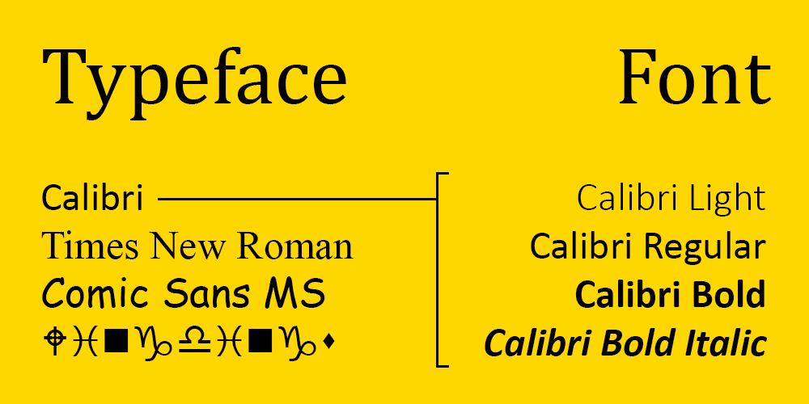

Before we begin, let's first clarify the difference between a typeface and a font.
A typeface is a collection of fonts, while a font refers to a specific style or weight of a typeface.

Typography is the art and technique of arranging type. Whether you’re designing a website, an app, or a poster, you’re using type to deliver a message. Typography serves two main purposes. The first is it must be legible. Can a user read and understand it? The second is how you use typography to create a mood or design aesthetic to attract a specific audience. Learning the fundamental rules of type, so you can break them later, will help you become a better designer. It just takes practice and a little knowledge.
There are three main categories of type: Serif, Sans Serif, and Decorative.
Serif typefaces bear small lines or strokes (serifs) at the end of larger strokes, often coming in the form of little "feet" at the bottom of letters. Serif typefaces are more formal and traditional.
Sans Serif typefaces lack serifs, and are typically more modern and bold.
Decorative typefaces are unique, often having some special quirk to make them stand out. These can be useful for eye-catching logos or headlines, but should be used sparingly.
While using a multitude of colors and fonts sounds like it would result in a spectacle of a website, going overboard can hurt the readability of your website.
A color scheme is a harmonious combination of colors. The three main types of color schemes designers should know about are monochromatic, complementary, and analogous. You could think of these schemes as sort of like templates for choosing colors.
Monochromatic color schemes are based on a single hue ("mono" means one). Hues are primary and secondary colors, like red, yellow, and green. To create a monochromatic color scheme, you'd pick a hue, for instance blue, and use tints, shades, and tones to create a harmonious palette. Monochromatic colors tick the box for visual appeal, but be careful to create enough contrast for legibility.
Complementary color schemes consist of colors on opposite ends of the color wheel. For example, red and green or blue and orange. Complementary colors tend to contrast well and are therefore a popular choice for web design. However, the contrast can be striking and should therefore be used intentionally in order to ensure that the colors aren't too distracting.
Analogous color schemes are made of colors that sit next to each other on the color wheel. These color schemes are inherently visually appealing, but as with monochromatic color schemes, be careful to create enough contrast for legibility. A tip for using an analogous color scheme on a website is to pair it with a neutral color like black or white in order to improve readability.